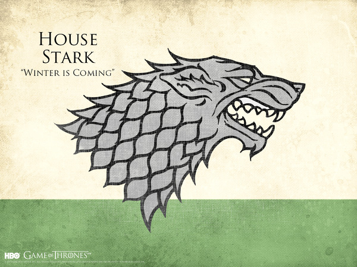

특징으로는 회색 눈에 짙은 머리색, 긴 얼굴, 그리고 고집스러운 성격이 있다. 얼음과 불의 노래 본작 시점의 스타크 아이들은 전원 스킨체인저의 자질을 보이고 있다. 아리아, 브랜, 존, 리콘은 작중 공인받은 상태. 롭과 산사도 스킨체인징은 보여주지 못했지만 애초에 사람이 길들일 수 없는 짐승인 다이어울프와 깊은 교감을 나눈 것을 보면 마법적인 재능을 가지고 있는 것으로 추정된다. 스타크 가문의 일원들이 이토록 강력한 마법적인 재능을 가진 이유는 고대 시절 역시나 강력한 마법으로 유명했던 워그 왕이나, 고분 왕 등을 굴복시키고 그들의 딸들을 받아와 혈통이 합쳤기 때문이거나 아니면 애초부터 이런 힘을 가진 워그의 후손이었으나 세월이 흐르면서 잊혀졌기 때문으로 보인다. 가언인 "겨울이 오고 있다"는 시련의 때를 대비해야 한다는 의미로 많이 쓰인다. 작품 내 대가문들 중에 제일 고생하는 가문이라고 봐도 무리가 없는데 주인공급의 캐릭터가 많아서 그럴 수밖에 없기 때문. 그 밖에도 스타크 가문의 별명 중 하나가 겨울왕들이었던 만큼 적들을 겁줄때 "겨울이 오고 있다"라고 하기도 한다. 작중에서는 시작 시점 기준으로 올곧기 그지없는 현 영주인 에다드와, 에다드에게 철저히 가르침을 받은 자식들의 영향으로 '스타크=착함' 같은 이미지를 갖기 쉬운데, 꼭 그렇지만은 않다. 기나긴 스타크 가문의 역사엔 볼턴 가문처럼 잔인하고 냉혹한 인물들도 많았고, 맛이 가서 헤롱대는 사람도 있었다. 역사적으로 스타크 가문에게 덤볐다가 멸문지화를 당한 가문도 수두룩하다. 스타크 가문의 납골당에는 죽은 이의 석상을 만들고 그의 혼을 봉인하기 위해 석상마다 무릎에 검을 하나씩 올려놓는데, 오래전에 만들어진 검들이 녹슬어서 거의 부스러져버린 모습을 에다드가 보고는 '검이 없어지면 봉인도 풀린다는 걸까. 아니길 바란다. 저들은 차가운 땅을 다스린 차가운 자들이다.'라고 독백하는 장면도 나온다. 실제 역사를 봐도 고대에 북부의 왕을 자칭하기 전에 스타크 가문의 왕들은 겨울 왕[4]들이라고 불렸으며 수천 년 전에는 윈터펠 근방을 다스리던 군소 왕에 불과했으나 북부 통합 운동에서 점차 세력을 확장하여 넥의 늪 왕, 배로우랜드의 고분 왕, 해룡 갑의 워그 왕 등 다른 왕들을 하나 하나 꺾어서 굴복시키거나 박살내었다. 세 자매 군도의 소유로 인한 베일과의 전쟁인 물 건너의 전쟁에서는 세 자매 군도에서 학살도 저질렀다. 게다가 브랜이 과거를 보는 능력을 통해 본 것들 중에는 윈터펠에서 옛 신에게 바치는 인신공양이 벌어지는 모습도 있다. 멀리 갈 것도 없이 에다드의 부친인 릭카드 스타크부터 굉장히 야심이 많은 인물이어서 장남과 딸의 약혼은 전부 남부의 대가문들과 했는데, 로버트의 반란 이후 자기 영지 밖에서 벌어지는 일에 관심을 끊고 조용히 살았던 에다드와는 전혀 반대의 모습이다. 또한 에다드의 큰 형인 브랜던 스타크도 에다드처럼 신중하고 올곧은 사람이기보다는 로버트 바라테온이 연상되는 호인이었다. 당장 약혼자가 있는데 애인이 따로 있었던 것도 그렇고. 스타크 가문에는 늑대의 피라는게 존재한다는데 다름이 아닌 늑대 같은 성향과 기질을 타고 나는 인물들을 이렇게 부른다고 한다. 근세대에 죽은 자들 중에는 브랜던 스타크와, 리안나 스타크가 늑대의 피를 가진 것으로 유명했으며 에다드 스타크의 딸 아리아 스타크도 늑대의 피를 가지고 있다고 표현했다. 스타크 가문에는 대대로 이렇게 늑대의 피라 표현되는 성향을 가진 인물들이 매우 많았다고 추측된다. 스타크 가문이 지배하고 관리하는 영토 크기로만 보면 칠왕국 중 최대[5]를 자랑하지만 혹한의 기후를 자랑하는 북부이기에 작물 생산력이 가장 떨어지고, 인구도 적어서 그다지 의미가 없다. 현실의 러시아와 비슷하다. 장벽 너머의 사람들에게는 아마도 최종 보스로 보일 것이다. 역사적으로 아무리 장벽 앞에서든 장벽을 넘어와서든 밤의 경비대와 치고 박더라도, 스타크 가문의 가주가 밤의 경비대 총병력의 수 배는 될 것 같은 엄청난 수의 군대를 이끌고 오는 것을 보면 저절로 절망이 느껴질 것. 밤의 경비대와 매우 친밀한 관계. 밤의 경비대의 창설자가 스타크 가문이기도 하고, 창설 이래 작중 시대까지 가장 큰 후원자였으며, 유사시 가장 빠르게 병력을 지원해 주기도 한다. 밤의 경비대 내에서도 스타크 가문의 입지가 커서, 스타크 가문 출신의 10살 짜리 아이가 사령관에 뽑힌 적도 있다. 이외에도 스타크 가문 가주의 사생아, 동생, 차남 이하 등이 스타크라는 간판 하나로 어린 나이에 밤의 경비대 사령관에 뽑힌 사례가 4번이나 있다고 한다. 가문의 근위대는 원작에서는 사슬갑옷을 입지만 드라마에서는 두정갑과 비슷한 브리간딘을 입는다. 투구에 대한 묘사는 비슷하다.